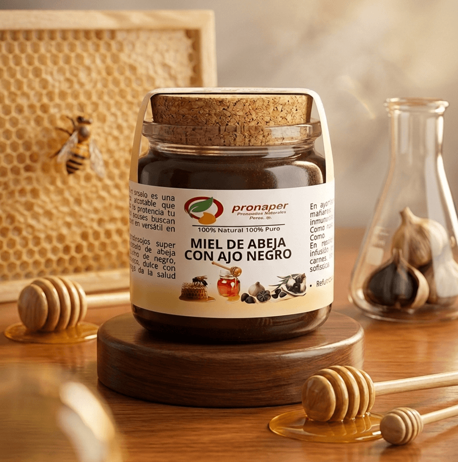

Ajo Negro con Miel de Abeja Pura
Energizante Natural, Refuerzo Inmunológico y Salud Respiratoria
La combinación perfecta entre las bondades del ajo negro madurado y la miel orgánica pura. Un elixir natural que fortalece las defensas, suaviza las vías respiratorias y provee energía vital de forma sostenida.
📲 Consultar / Comprar por WhatsApp📋 Ficha Técnica y Propiedades
Uniendo la potencia antioxidante del ajo negro con las propiedades antibacterianas y balsámicas de la miel natural, este preparado es ideal para toda la familia durante cambios de estación o momentos de alta exigencia física y mental.
Beneficios Principales
- Potente Refuerzo Inmunológico: Aumenta la producción de defensas naturales frente a infecciones y resfriados comunes.
- Protección Respiratoria: Calma la tos, alivia la garganta irritada y ayuda a limpiar las vías respiratorias.
- Energía Vital y Digestión: Aporta nutrientes de rápida absorción, mejora la digestión y combate la fatiga crónica.